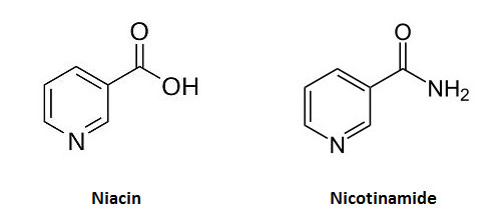

Totoz Collection !
Back Niacin can go by other names, that may also act as a source of The same vitamin, What names are those ?
✓ Nicotinic Acid
✓ Nicotinamide
✓ Nicotinamide
Niacin is a simple derivative of ?
✓ Pyridine
What type of reactions is niacin mainly invloved in
✓ Oxidoreductase rxns
The active forms of Niacin are ?
✓ Nicotinamide adenine dinucleotide (NAD+)
✓ Nicotinamide adenine dinucleotide phosphate (NADP+)
✓ Nicotinamide adenine dinucleotide phosphate (NADP+)
What coenzymes depend of niacin as a key component
✓ Nicotinamide adenine dinucleotide (NAD+)
✓ Nicotinamide adenine dinucleotide phosphate (NADP+)
✓ Nicotinamide adenine dinucleotide phosphate (NADP+)
The amino acid from which Niacin can be derived from is ?
✓ Tryptophan
What is the RDA for Niacin
✓ 15 to 20 mg
How does excessive intake of maize and sorghum lead to Niacin deficiency
✓ Maize contains niacin (vitamin B3), but niacin in its natural form in maize is bound to other compounds, making it biologically unavailable for absorption by the human body.
✓Sorghum (jowar) contains compounds that act as niacin antagonists, which means they interfere with niacin absorption and utilization in the body
✓Sorghum (jowar) contains compounds that act as niacin antagonists, which means they interfere with niacin absorption and utilization in the body
How will deficiency of vitamin B6 cause niacin deficiency
✓ vitamin B6 is involved as a coenzyme in the pathway of synthesis of niacin from tryptophan.
Explain how a person having Malignant carcinoid syndrome might be predisposed to niacin deficiency
✓ tryptophan metabolism is diverted to formation of serotonin
What is Hartnup disease and how does it cause niacin deficiency
✓ it is a genetic disorder in which tryptophan absorption and transportation is impaired.
Isoniazid predisposes niacin deficiency..... True or FALSE...... support your answer
✓ True
✓ soniazid is a medication used primarily to treat tuberculosis (TB) but it interferes with the conversion of tryptophan to niacin
✓ soniazid is a medication used primarily to treat tuberculosis (TB) but it interferes with the conversion of tryptophan to niacin
Name a therapeutiv use of Vitamin B3
✓
Draw the chemical structure of niacin and Nicotinamide

Vitamin B6 is a mixture of ?
✓ Pyridoxine
✓ pyridoxal
✓ pyridoxamine
✓ thier 5' phosphates
✓ pyridoxal
✓ pyridoxamine
✓ thier 5' phosphates
WHat is the activated form of vitamin B6
✓ Pyridoxal phosphate (PLP)
✓ formed from phosphorylation of all three forms of vitamin B6
✓ formed from phosphorylation of all three forms of vitamin B6
When and why does the requirement of this vitamin increase
✓ When → increase in protein intake
✓ Why → it plays a major role in amino acid metabolism
✓ Why → it plays a major role in amino acid metabolism
What diagnostic test can be done to assess the levels of vitamin B6 in the body
✓ checking activity of Aspartate transaminase in RBCs
Severe deficiency of biotin leads to ?
✓ Anemia
What are the other names for Biotin
✓ Vitamin B7
✓ Vitamin H
✓ Vitamin H
What is the main source of Biotin for the body
✓ Intestinal flora
Biotin acts as a coenzyme for enzymes in what type of Reactions, give specific examples
✓ Carboxylation Reactions
✓ acetyl-CoA carboxylase in Lipogenesis
✓ pyruvate carboxylase in Gluconeogenesis
✓ acetyl-CoA carboxylase in Lipogenesis
✓ pyruvate carboxylase in Gluconeogenesis
Explain the concepts of Inherited single or multiple carboxylase deficiencies in relation to Biotin
✓ Single carboxylase deficiencies is when a person has a deficiency
✓
✓
✓
WHat is the other name for Vitamin B12
✓ Cobalamin
What is the main source of vitamin B12
✓ Found only in foods of animal origin
✓
What are some of the uses of Folic acid
✓ DNA synthesis
✓ repair DNA, and methylate DNA
✓ repair DNA, and methylate DNA
What are some of the results of Folate deficiency
✓ Neural tubule defects in developing embryo
✓ Nerve damage and limb numbness
✓ Nerve damage and limb numbness
Explain the effect of Methotrexate, an anti-
✓
✓
✓